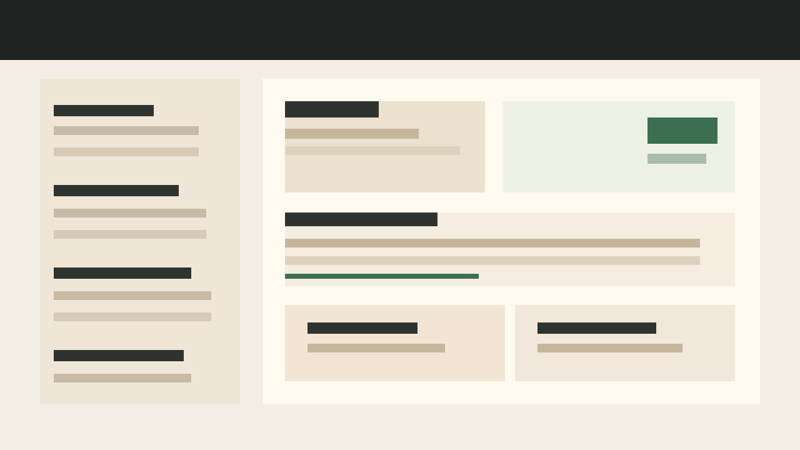
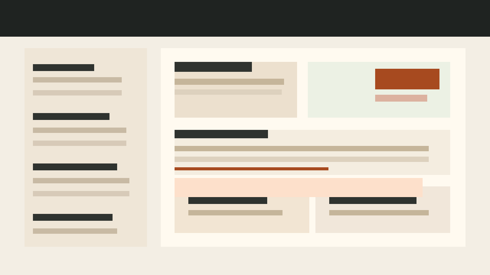
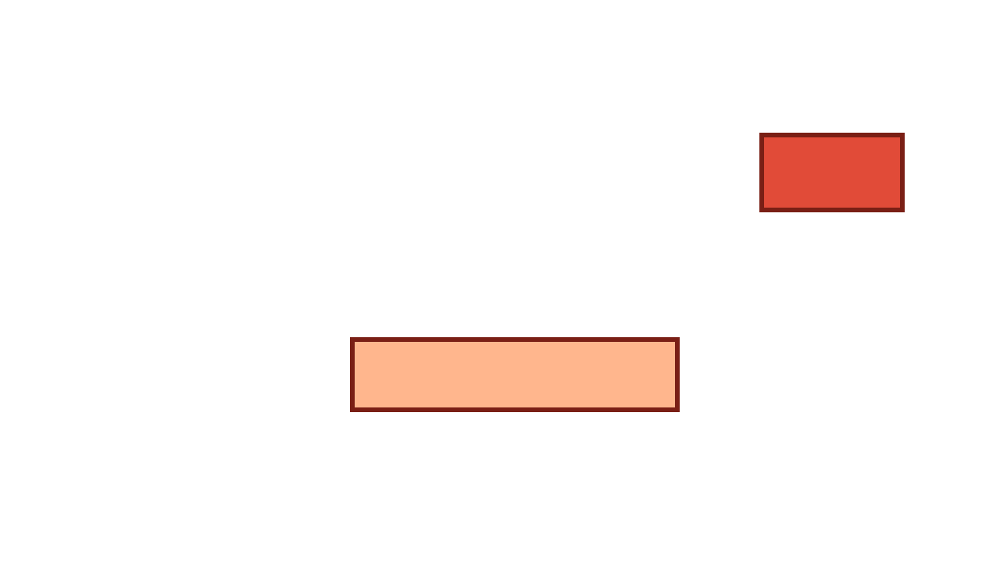
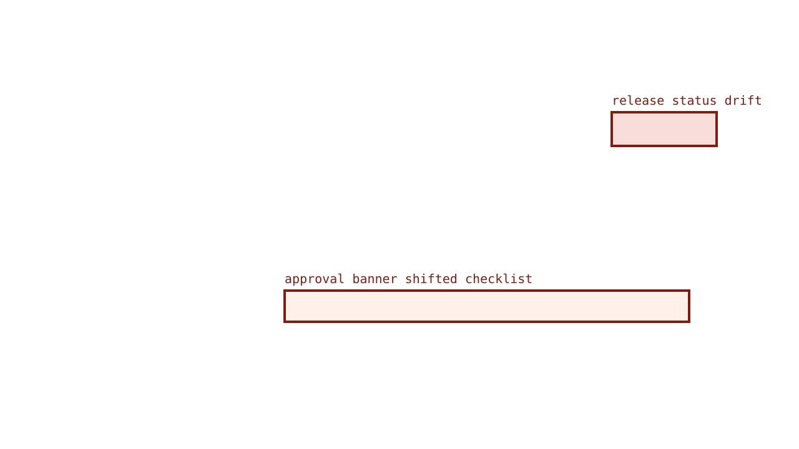

Changed
Release readiness visual pack
This pack shows the demo regression used on the public QA Pages site. It is intentionally reviewable: one release-status drift, one checklist shift, and linked machine-readable evidence.
84.3
15.7%
2 drifted




- Manifest JSON
- Baseline DOM snapshot
- Current DOM snapshot
[data-qa='release-status-card']drifted from pass to hold.[data-qa='changes-approval-banner']introduced layout shift on the checklist.